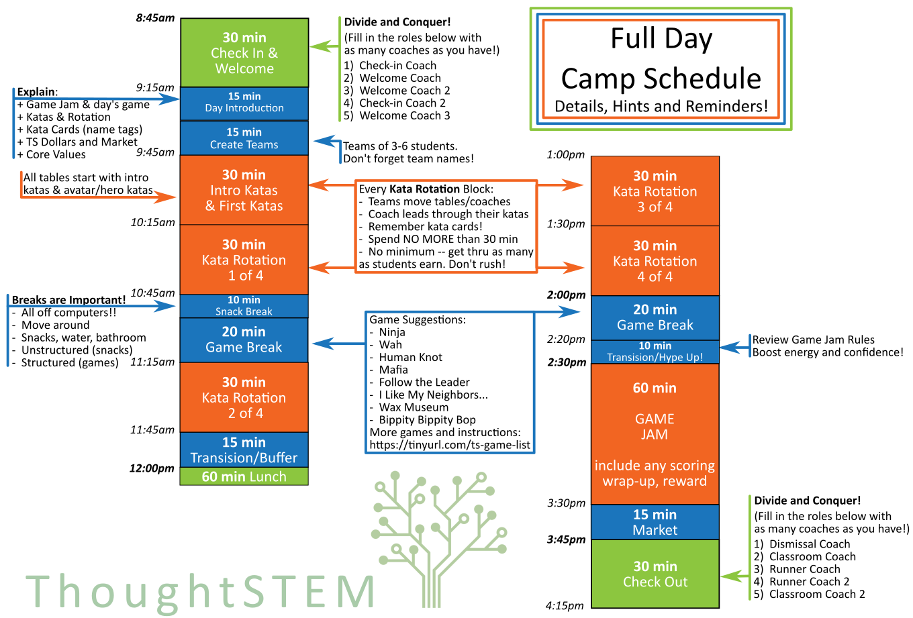
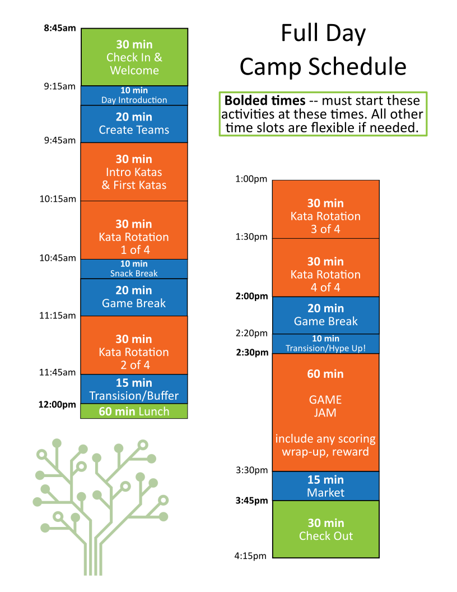

7 Full Day Camp Schedule
7.1 Schedule with Hints

7.2 Simple Schedule

7.3 Schedule Breakdown
Here is some detailed information on how each block of time on the schedule above is expected to run.
7.3.1 Check-in & Welcome
8:45am - 9:15am
It is important to start check-in on time, but not early! To run a smooth and successful check-in, each coach should take over a specific job in the check in process.
AT FLEET: The Jobs for coaches to take on are listed below. Jobs are listed from most to least vital, so fill in the top jobs first if you have fewer than 5 coaches:
- Check-in Coach – armed with roster and any parent handouts, check-in each student:
Check paperwork status, give any needed paperwork to parent
Ask parent to confirm authorized pick-up list
Give parent any handouts
Check student in and send into room
- Welcome Coach – as students arrive, welcome them to class:
Explain and make name tags
Be sure to check photo permission for each student!
Show where lunches/bags can be set
If no other Welcome Coaches, take on some of the responsibilities of Welcome Coach 2 as well
- Welcome Coach 2 – make a comfortable environment for students while waiting for the day to officially start:
Encourage conversation between students
Notice any shy/uncomfortable students and include them
Small talk or games, just keep is comfortable and welcoming!
Check-in Coach 2 – assist with check in: answering parent questions, handout paperwork, etc.
Welcome Coach 3 – same as Welcome 2.
7.3.2 Introduction & Teams
9:15am* - 9:45am
*Start when all students have arrived or 9:15; whichever comes first.
Introduction – gather all students and outline the day, being sure to explain (with the help of any returning students):
GAME JAM (briefly, more detail later)
What kind of game you are making today
Katas, kata cards (name tags), and table rotation
ThoughtSTEM dollars and market
Core Values
Making Teams – break the students into teams. They can choose their teams with coach assistance to make sure teams are balanced and happy! Students work together to create a team name and add it to the Daily Team Sheet.
Number of teams depends of the size of the camp and number of coaches. You will never have more teams than coaches, but you may have fewer. Use the guide below to assist:
>7 students = no more than 1 team
7 - 11 students = no more than 2 teams
12 - 15 students = no more than 3 teams
16 - 19 students = no more than 4 teams
20+ students = no more than 5 teams
7.3.3 Intro Katas & First Kata Rotation
9:45am - 10:15am
Each team is directed to a table with a coach. That coach leads the students through the Intro Katas and as many of the First Katas as their team earns in the 30 minute block. First Katas are almost always the avatar/avatar-equivalent katas, but will always be labeled as well.
This is the only kata block where everyone is working on the same katas. See below for more guidelines.
7.3.4 Kata Rotations
10:15am - 10:45am
11:15am - 11:45am
1:00pm - 1:30pm
1:30pm - 2:00pm
This is the foundation of the educational part of camp. Here’s how to optimize the LEARNING as well as the FUN!
Rotate tables and coaches – mixing things up has many benefits for students (different coaches have different teaching styles, time to stand and stretch, change in space helps wake up tired brains...) as well as for coaches (taking turns with more challenging students, students keep changing computers and can’t get attached to code, coaches can focus on knowing one set of katas).
No minimum goal – don’t stress about getting through a certain number of katas with any given team. It is more important that the students actually earn the katas than get through any specific number of katas.
Kata cards – For every kata earned, students receive a new hole punch in their kata card. Once they have filled their card, students can get a ThoughtSTEM Dollar bonus! Then they keep that card, and start working on a new one.
Stick to 30 min max! – make sure you have time for non-computer breaks and, of course, GAME JAM!
7.3.5 Snack Break
10:45am - 10:55am
This is unstructured break time. These are great times for students to take a break from the computers, snack and relax! However, even in unstructured time, coaches should always be aware of, and in control of the camp environment. Remember:
During breaks, all students are OFF our computers. This can be a hard rule to enforce all the time – what about the student who wants to keep coding, that’s good right? Or the student who is a bit behind, and wants to spend break catching up? What if they are just playing their game? But really. Really. Please make sure all students are completely off the computers during all breaks. Among other things, time away from the computer allows for students to get back in touch with those annoying physical bodies we have – and sometimes it’s not until they step away from the screen that they realize ’Oh! I’m hungry/thirsty/sore/need to go to the bathroom!’ This is a ThoughtSTEM Camp policy and needs to be followed!
Keep it sane and safe. Coaches can (and should!) give the students some space during these breaks, but must stay attentive for student safety. There shouldn’t be running or throwing things. Coaches should also be mindful of conversations – keeping an ear out for topics that could upset or seem inappropriate to other students. Be especially mindful of students using their own devices (phones and computers) during breaks. While not strictly disallowed, that privilege can be removed at anytime.
Be mindful of ALL students. Just like during the rest of camp, coaches are working to make this as positive of an experience for each student as possible! To this end,watch for lonely kiddos. Do your best to make every student feel welcomed, even it if means you just sit with that quiet student and chat about Spiderman for a few minutes.
7.3.6 Game Breaks
10:55am - 11:15am
2:00pm - 2:20pm
Game breaks may be substitutes with unstructured time, if needed, or (if at Fleet) museum time. However, games are recommended because of the benefits that playing social games can have for students (and coaches!):
...release excess energy!
...take a brain break from coding!
...socialize, especially if they are shy!
...feel like they are getting a "real camp experience!"
...engage and connect with coaches and other students!
...remember who the leaders are (coaches) and how to listen to them!
Coaches are encouraged to play any games they think will engage the students! You can also find a list of games specifically curated for ThoughtSTEM camps here: www.tinyurl.com/ts-game-list.
Students do not have to participate. Coaches should strive for 100% participation, which may involve some creative rule adjustments for students with differing needs and abilities! If a student will not play, and refuses accomodation, that student may sit quietly to the side with a coach. Remember – if sitting out becomes more attractive than the game you are playing (the student gets to play on their phone, for example), you will be fighting an uphill battle to get even 50% participation!
Remember: no students should be on computers during breaks. This rule also should extend to the student’s own devices (phones, computers) during structured breaks such as game breaks.
7.3.7 Transition to Lunch/Buffer Time
11:45am - 12:00pm
Time that can be be eaten into if any of the morning activities run over. Otherwise you can fill this time with any tidying up that is needed, a quick game, bank time (when students can exchange 1s for 5s, etc), or even market!
7.3.8 Coach Lunch Breaks
Every coach gets at least 30 min break for lunch.
AT FLEET: Coaches split into 2 groups and take breaks in alternating shifts. When not on lunch, coaches are assisting Fleet staff with monitoring student lunch. Lunch breaks are either from 12:00pm - 12:30pm or 12:30pm - 1:00pm. Be sure to take your entire break and also return on time so the rest of your team can have their entire break!
7.3.9 Transition into Game Jam
2:20pm - 2:30pm
After your game break (it is important to take a break between last kata rotation and the game jam!), take some time to outline some specifics of game jam and get the students excited and ready!
Coaches are now judges, so don’t expect us to help you out (for free)!
The way to succeed in game jam is to start small and test often. Once more for the kids in the back! Start small and test often!!!
- Points are awarded in two ways:
throughout the game jam with bonus point stickers for CREATIVITY or COOPERATION
at the end based on number of parentheses and keywords
Careful though, you don’t get any points if your game doesn’t run! Hence the first bit of advice! Coaches will help all students make sure their games do run, but we don’t need to tell them that at the top!
At the end of the jam, students will calculate their points and earn ThoughtSTEM Dollars to be used in the market!
Score Cards!Hand out index cards, have students write their name and their team name. Explain that Bonus Stickers will go here.
Take the time to explain any Student Supports that will be available during the jam. See Below for more info on Student Supports.
Pair up if you are running game jam in pairs!
Reinforce other rules, like no touching other people’s computers, no running or anything else you deem necessary
Just as important as any rules/reminders is setting the right energy for the jam! Be positive, excited, and focused!
7.3.10 GAME JAM!
2:30pm - 3:30pm
Here’s some advice on how to create a fun and successful jam!
Student Support
We know that asking students to code an entire game with code they have only learned that day can be daunting! There are lots of support systems you can add to ensure student success while still encouraging independence and creativity:
Resource Center – set up a couple computers with access to the katas.thoughtstem.com page. Show students how to navigate the page prior to game jam. Computers MUST STAY at the center, and coaches may instate a price for visiting the Resource Center at any time!
Call in a Coach! – this is an easy thing to add partway though a jam if you are seeing frustrated students. For a fee, any student can get a coaches help for 2 minutes! A good starting price is 5 ThoughtSTEM Dollars.
Starting Code – don’t forget that you always have access to scrap paper, white board or any other tools where you can write hints for some or all students.
A word of advice: Err on the side of fewer supports – the students may surprise you! You can always add some supports in partway through jam, but it’s harder to take them away!
Coaches
Okay, the jam is on. What do you, a coach, do now??
Encourage the kids by awarding bonus point stickers when they do things we like to see! When they work with their team, when they test their game, when they create a cool story behind their game, etc. Also use the stickers as a motivator when things get tough: ’bonus point for working on debugging! That’s tricky stuff!’ Not all students/teams need to get the saem number of bonus, but keep an eye on distibution to keep it fair.
Monitor how students are progressing, and adjust jam rules to make it easier or harder as needed! For example, adding a price to the resource center, or adding in the ability to Call in a Coach!
In general, be a positive and supportive presence! BE EXCITED!
Scoring & Awarding
Be sure to stop game jam with enough time to tally points! Students should score their own games, under the guidance and review of coaches. The suggested point algorithm is below, but should be adjusted to make sure students earn enough money to feel accomplished without bankrupting the coaches! Aiming for $10-25 is good sweet-spot.
(num of open parentheses) + (num of close parentheses) + (num of keywords,ex. #:avatar) = X X/5 = Y Y + (num of bonus point stickers) = TOTAL $$
7.3.11 Market
3:30pm - 3:45pm
Do your best to keep the market organized and yourselves sane! Some hints on how to accomplish this:
Dismiss teams one at a time to the market.
Do not dismiss a team until they have completed any clean up tasks you have given them.
Give yourself enough time for market – don’t make yourself rush!
7.3.12 Check Out
3:45pm - 4:15pm
Just like with check-in, splitting up what needs to be done between the coaches will keep things safe, sane and easy!
FOR FLEET – Recommended jobs are listed below, in order of most to least important:
- Dismissal Coach – armed with roster, check the IDs of every student pick-up:
Move down the line of cars, checking for anyone picking up a student from our camp
(Sometimes people will park and walk up to you as well)
Ask for student name, and to see ID
Check ID against approved pick up list
If name is on list – go get student or send Runner Coach
If name is not on list – check in with Andia and either call parent yourself or Fleet will call
- Classroom Coach – stay in the room with students:
Keep students safe and happy!
Help Dismissal or Runner Coach get students have a pickup waiting
If possible, start minor tidying and clean up.
- Runner Coach – bring students from classroom to their waiting pickup:
Wait for the OK from the Dismissal Coach
Make sure students get safely to their car
Runner Coach 2 – same as Runner Coach.
Classroom Coach 2 – same as Classroom Coach.
If any students are left at 4:15, let the monitors know through Slack, and Andia at Fleet.